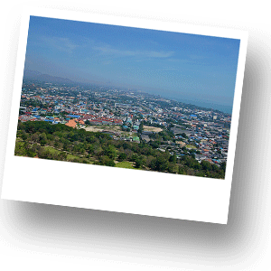
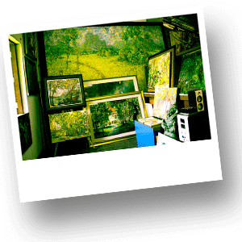
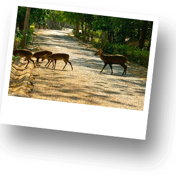
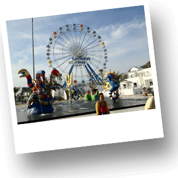
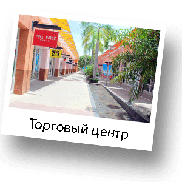
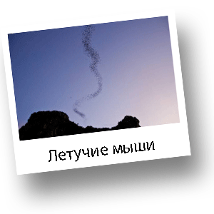

Путешествие для Всех!!!
Маршрут:
Гора (холм) Khao Hin Lek Fai, Деревня художников (Artist Village), Центр разведения оленей, Santorini Park (развлекательный комплекс), Outlet Cha-Am (торговый центр), Гора летучих мышей.

Компания Navigating Thailand предлагает Вам отправиться в развлекательное путешествие всей семьей. Эта экскурсия уникальна тем, что Вы увидите места, которые не представлены в традиционных экускурсионных программах. Данная программа идеально подходит для путешествия всей семьей. Отправляясь в путешествие никто не будет скучать! Экскурсия составлена таким образом, чтобы и взрослые и дети нашли для себя массу впечатлений и получили максимум положительных эмоций.
Путешествие начинается с посещения холма Khao Hin Lek Fai, откуда открываются замечательные виды на Хуа Хин. Гора расположена примерно в 3 киллометрах от центра города. Khao Hin Lek Fai имеет три обзорные плщадки.

Две площадки облагорожены изгородью, а одна полностью из дикого камня. Со всех трех площадок открывается изумительный вид на Хуа Хин. На территории горы расположен потрясающий парк. В парке Вы можете видеть живых павлинов, которые свободно прогуливаются по территории. Там же невероятное множетсво очень красивых цветов и деревьев. В парке всегда немного народа и можно спокойно наслаждаться прогулкой. Холм Khao Hin Lek Fai посвещен Королю Раме VII и, именно ему, там установлен памятник. Далее Вы отправитесь в Деревню Художников – это место очень необычно для Тайланда. Особенно понравится творческим людям. Здесь сконцентрирована абсолютно вся творческая активность Хуа Хина.Вашему вниманию представлены работы мастеров разных жанров.

Большая часть художников живет именно в этой деревне. Вы сможете купить в Деревне художников различные художественные произведения, начиная от открыток ручной работы и небольших акварельных картинок, и заканчивая внушительного размера полотнами и величественными резными деревянными панно. Здесь есть и концептуальные металлические фигуры, и корзинки из пенопласта, и стилизованные напольные вазы, и винтажная одежда, и батик. В дополнение ко всему вышеперечисленному, можно посетить уникальные домики для духов. Они сделаны из глины с примесью соломы, крыша покрыта тростником. У них есть двери, а «окошки» сделаны из различных стеклянных предметов разных цветов. Внутри находятся фигуры духов. Следующей остановкой для Вас будет центр разведения оленей.

Очень интересное место, где обязательно понравится, как взрослым так и детям. Территория парка не очень большая, но там Вы сможете увидеть много животных. У Вас будет прекрасная возможность покормить оленей, которые свободно разгуливают по территории и с удовольствием подойдут к Вам,чтобы взять у Вас из рук корм. Также по территории свобоно разгуливают павлины. В клетках Вы найдете дикобразов, лемуров, обезьян, медведей и множетсво видов птиц. После прогулки по парку Вы отправитесь в развлекательный шоппинг-ценр Santorini Park под открытым небом в греческом стиле. Santorini Park очень красивое архитектурное сооружение, где Вы найдете развлечения для взрослых и детей. Находясь на территории центра, Вы немного отвлечетесь от традиционного тайского стиля и почувствуете себя в сказочной Греции.

В Santorini для Вас представлена уникальная возможность совместить небольшой шоппинг, обед и развлечения. В центре есть прекрасные атракционы для детей, а также единственная на территории провинции Прачуапкхирикхан знаменитая тарзанка для взрослых. Посещение атркциона «Тарзанка» не оставит Вас равнодушными и, конечно, выброс адреналина Вам гарантирован. Помимо всего территория центра очень интересно декорирована и поистине уникальна для Таиланда. Фотографии, сделанные на территории Santorini Park будут совсем не похожи на остальные Ваши фото, которые остануться у Вас после путешествия в Таиланд. После отдыха и обеда в Santorini Вы отправитесь в настоящий Outlet, где Вы сможете совершить покупки и приобрести подарки для родных и близких.

На территории торгового центра представлена одежда, обувь, аксессуары как для женщин, так и для мужчин. Также имеются магазины детской одежды. После посещения торгового центра Вы отправитесь на созерцание необыкновенного зрелища. Из пещеры, расположенной высоко в горе на фоне заката Вы сможете увидеть, как вылетают на охоту миллионы летучих мышей. Зрелище удивительное и поражает своей необыкновенностью. Также, когда мыши вылетают на охоту Вы увидите птиц, которые в свою очередь охотятся на летучих мышей. Залетая в черную стаю птицы выхватывают мышей и держа их в клюве улетают.
Рекомендации по одежде:
Закрытые плечи и колени, головной убор, удобная обувь

1800 Бат
Выезд - 10:00
2000 Бат
Возвращение - 19:30
2500 Бат
*Стоимость указана за человека
**Дети до 3 лет - бесплатно, без предоставления отдельного места в транспорте
***Дети от 3 до 10 лет - 1500 Бат
В стоимость включено:
Трансфер, русскоговоряший гид, все входные билеты, вода, корм для животных
Дополнительные расходы:
Личные расходы, чаевые